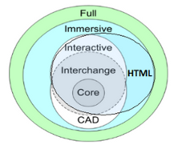

2. Basic X3D Concepts: Nodes, Components and Profiles
X3D Nodes
The X3D standard for declarative 3D, which is in large parts implemented by X3DOM, defines each 3D scene to consist of a set of so-called
nodes.
Each nodes represents a certain part or aspect of the scene: a light, an object, the material of an object's surface, and so on.
All nodes of the scene are arranged in a tree or graph structure, the whole structure is called the
scene-graph.
The behavior of each node, like, for instance, the color of a material, can be defined by setting the node's
fields.
The XML description of a material node, which defines a surface of some object to be red (in RGB encoding
1 0 0), could, for example, look like this:
<Material diffuseColor='1 0 0'></Material>
As you might have recognized, the XML description of the X3D node looks pretty much like regular HTML code, and the value of its field entitled
diffuseColor is just defined like you would do it for an HTML attribute.
In fact, if you are already familiar with HTML, learning how to use nodes in X3DOM is not that hard.
You'll learn how to use nodes by example in the X3DOM
tutorials.
If you want to read more about the general concept of X3D nodes, take a look at the
external X3D documentation resources.
X3D Components
The many nodes defined in the X3D standard are grouped into so-called
components.
Each component contains a set of nodes that serve a common purpose.
Nodes that define lights, such as
PointLight and
SpotLight, are grouped together in the
Lighting component, for instance.
The X3DOM documentation also contains an
overview of all components available in the X3DOM-full release.
X3D Profiles and the X3DOM HTML Profile
The X3D standard defines a lot of nodes, some of them for rather special use cases that are not important for most users.
Therefore, the inventors of X3D have employed the concept of profiles, which groups nodes together to high-level packages,
each corresponding to a specific class of applications. There is, for example, a CAD profile, which is meant to be used by CAD applications,
and an Immersive profile for interactive, immersive environments. This way, profiles act as a high-level concept that works on top of components.

The X3D components that are used by X3DOM have been carefully selected in order to provide a well-suited subset X3D that matches the needs of modern HTML applications.
The X3DOM creators did so by defining a special profile, which is entitled the
HTML profile.
This HTML profile is also containing some experimental nodes and fields that are actually not part of the X3D standard, but have been primarily designed for use with X3DOM.
Concretely speaking, this means for you as a developer that there might be some X3D nodes that are not implemented by X3DOM, while there are other nodes that are only available in X3DOM, but not in X3D.
You will, however, recognize the origin of each node if you take a look at the
X3DOM Scene Author API documentation.
If you want to learn more about the HTML profile and how it relates to existing X3D components and profiles, take a look at the corresponding
section of the official X3DOM page.
Finally, X3DOM even provides implementations of some X3D nodes that are not part of the original HTML profile.
Those nodes are, however, not packaged into the standard X3DOM release, but only into the X3DOM-Full release.